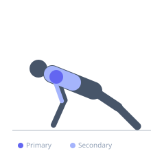

Exercise guide / Wall-Facing Handstand Push-Up
Wall-Facing Handstand Push-Up
The wall-facing handstand push-up positions the chest toward the wall rather than the back, forcing the body into a truly vertical and hollow position. This variation eliminates the arch that commonly occurs in the back-to-wall version and requires more core control. It is used as a bridge to the freestanding HSPU and trains the same deltoid and triceps musculature with more demanding postural requirements.
Primary muscles
deltoid anterior
deltoid lateral
Secondary muscles
triceps brachii
trapezius upper
Stabilizers
erector spinae
transverse abdominis
Equipment


Starting position
- Walk feet up the wall while facing it until the chest is close to the wall. Hands on the floor, chest touching or very close to the wall, body vertical.
Setup
- Begin from a push-up position facing the wall. Walk the feet up while walking the hands closer. Find the vertical with the chest against the wall.
Steps
- Step 1: Establish the chest-to-wall handstand position.
- Step 2: Lower the head toward the floor slowly.
- Step 3: Descend to full range — head touches the floor.
- Step 4: Press back to full arm extension.
- Step 5: Maintain chest contact or near-contact with the wall.
Coaching cues
- Chest stays close to the wall
- Body vertical — hollow position
- Press all the way to lockout
Breathing
- Inhale descending. Exhale pressing.
Range of motion
- Full arm extension to head on the floor.
Tempo
- 2-0-2-0
Common mistakes
- Letting the hips pike away from the wall during the press
- Losing the vertical body line and reverting to an arched position
Safety
- Have a mat under the head for protection
- Prerequisites: comfortable back-to-wall HSPU for multiple reps
Training
- strength: 2–6 reps
- strength: 3–5 sets
- Rest: {'strength': 180}